3800万回
3800万回
お茶目だった夫→17年後の姿が3800万再生「これぞ本物の垢抜け！」「本当に同じ旦那さん！？」【海外】
ねとらぼ · 02 Nov · @carolinarinconf ♥1,552,581
3800万回
ねとらぼ · 02 Nov · @carolinarinconf ♥1,552,581
東京カレンダー · 02 Nov · @gourmet_calendar ♥482
Excite エキサイト · 03 Nov
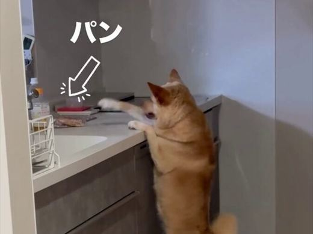
290万回 NEWオトナンサー · 03 Nov
ニコニコニュース · 03 Nov · @by.nico.log ♥28,550
 182万回
182万回
千葉テレビ放送株式会社 · 02 Nov
 84万回
NEW
84万回
NEW
Excite エキサイト · 03 Nov
ライブドアニュース · 03 Nov
Excite エキサイト · 02 Nov
Excite エキサイト · 03 Nov
Excite エキサイト · 02 Nov
 NEW
NEW
au Webポータル · 03 Nov
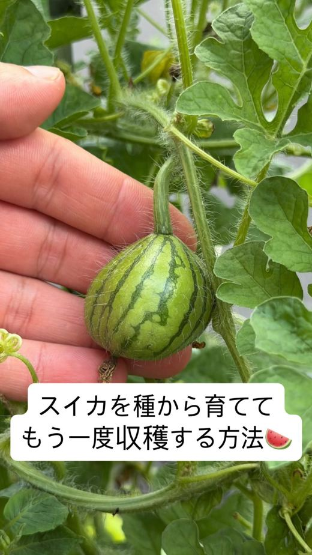
NEWねとらぼ · 02 Nov · @sora_gardenhack ♥15,549
Infoseek · 03 Nov
Unisba Media · 03 Nov
Yahoo!ニュース · 03 Nov
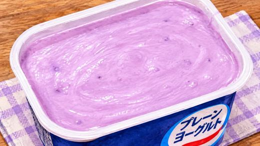
NEW知っ得レシピ · 03 Nov
知っ得レシピ · 03 Nov
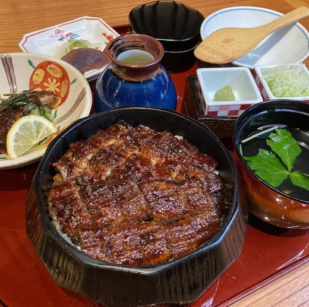
NEWFunliday · 03 Nov · @hitsumabushi_bincho ♥269
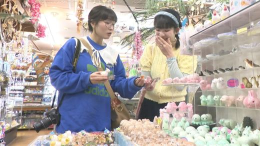
NEWau Webポータル · 03 Nov
Yahoo!ニュース · 03 Nov

東洋経済オンライン · 03 Nov
MAQUIA · 03 Nov
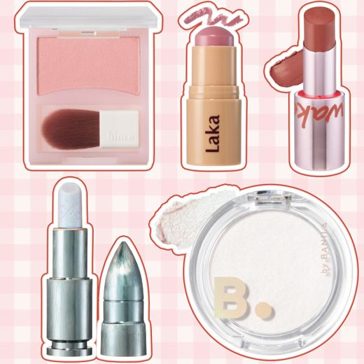
NEWYahoo!ニュース · 03 Nov
中日新聞Web · 03 Nov · @kenshi.02 ♥10,036
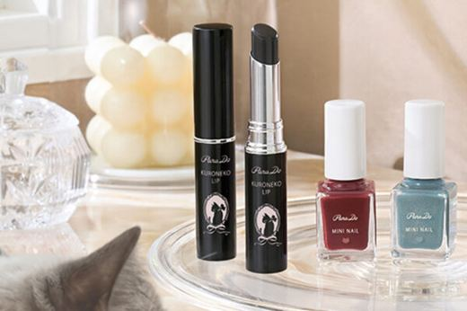
NEWｄメニューニュース · 03 Nov
中日新聞Web · 02 Nov · @meru_nukumi ♥52,843
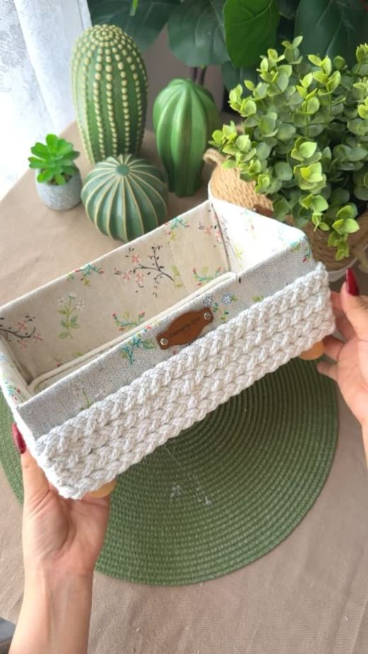
545万回ねとらぼ · 31 Oct · @cameliadiycraft ♥48,339
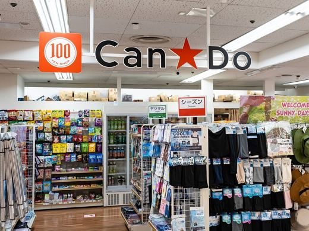
NEWライブドアニュース · 03 Nov
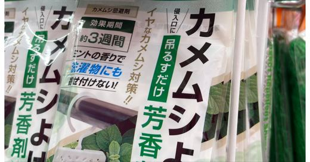
Yahoo!ニュース · 02 Nov
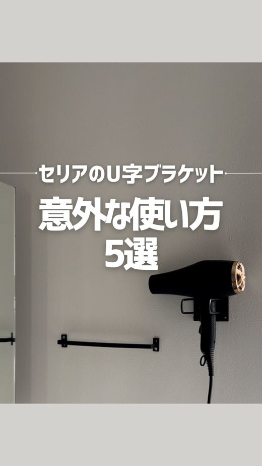
NEWたまひよ · 02 Nov · @hanako_kurashi_ ♥1,471

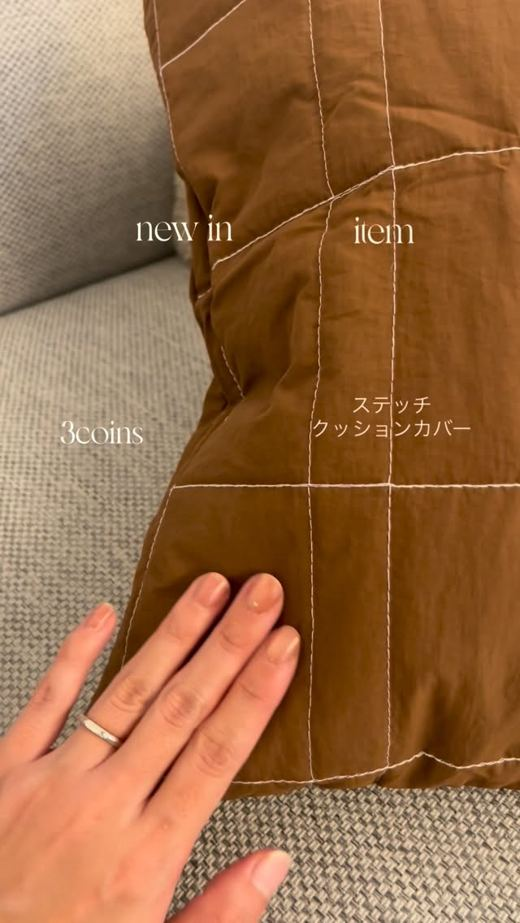
au Webポータル · 01 Nov · @miii____ie ♥44
アークランドサービスホールディングス株式会社のプレスリリース 2種のブレンド味噌と江戸甘味噌団子が決め手！自慢の具材たっぷりのち
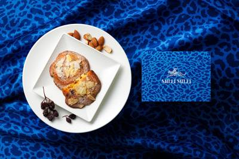
11/03 12:10 🗼 新宿株式会社シュクレイのプレスリリース 5月20日にNEW OPENした、おいしさと美意識が重なる、新・ミルフィユ専門店。 （写真）
株式会社エヌ・ディ・シーのプレスリリース たんぱく質を、毎日もう少しとりたい。そんな思いに応える、たんぱく補給食「ソイヤー」。い
株式会社 明治のプレスリリース 〜ミニチュアサイズの3人が朝の食卓やデスクに登場！お気に入りは“みだら”なフレーズ？独特な16ビ
株式会社デイアンドのプレスリリース 山形の風景と夜の時間を一杯のコーヒーに 山形市内で2店舗のコーヒーショップを運営する株式会社
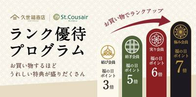
11/03 15:00 🚄 長野株式会社サンクゼールのプレスリリース ご利用状況に応じたランク優待制度を新たに導入 株式会社サンクゼール（本社:長野県飯綱町/
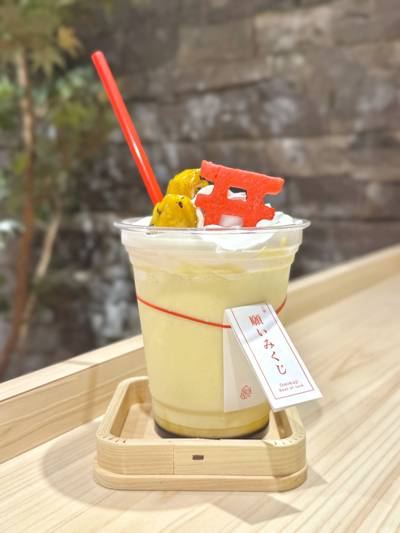
11/03 14:19 🚄 兵庫株式会社静岡木工のプレスリリース 2026年10月21日(水)より発売開始！ このたび、株式会社静岡木工が運営する縁起物専門店「
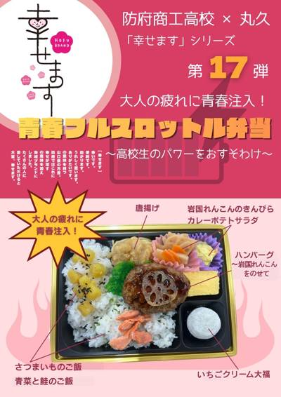
11/03 14:17 🚄 山口株式会社リテールパートナーズのプレスリリース この度、株式会社リテールパートナーズ（本社：防府市/代表取締役社長：田中康男）の
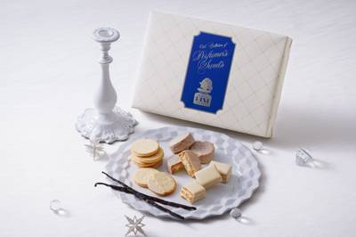
11/03 14:10 🚄 大阪株式会社シュクレイのプレスリリース 定番人気商品3種を詰め合わせたアソートが、冬限定パッケージで新登場【阪神梅田本店】 株式会社
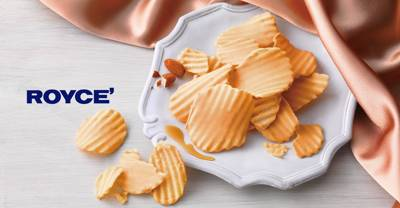
11/03 11:00 🚄 兵庫株式会社ロイズコンフェクトのプレスリリース 株式会社ロイズコンフェクト（北海道札幌市）は、毎年人気のポテトチップチョコレート[メ
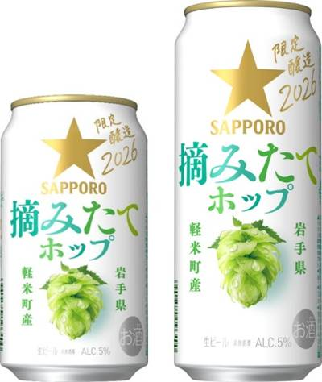
11/03 10:00 🚄 岩手サッポロビール株式会社のプレスリリース 今だけのみずみずしい香りを楽しめる摘みたてホップのビール サッポロビール株式会社(本社：
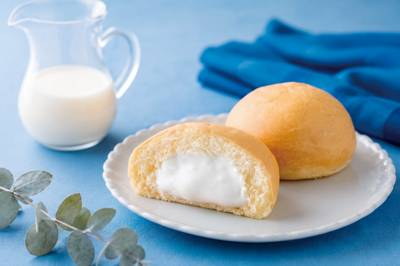
11/03 10:00 🚄 広島株式会社八天堂のプレスリリース ～とろけるくちどけとミルクの味わいを、もっと気軽に楽しめる一品～ 株式会社八天堂（本社：広島県三
アークランドサービスホールディングス株式会社のプレスリリース デミグラス×ケチャップマヨの"洋風Wソース"を
株式会社モンテローザのプレスリリース 11月4日（水）・5日（木）は店内飲食のメニューが全品半額！11月6日（金）は料理またはド
合同会社コーストインサイトのプレスリリース カフェイン80mg×L-テアニン160mgを配合。砂糖・甘味料・着色料・クエン酸不使
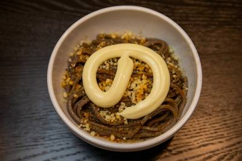
11/03 17:18 🚄 兵庫株式会社のみもののプレスリリース 蕎麦にマヨネーズ!? 新ジャンル「ふわあま油蕎麦」を提供する無料キャンペーンを11月4日(水)
株式会社ブロンコビリーのプレスリリース ブロンコビリーファン必見！ ファンのみなさまに喜んでほしい、そんな想いから生まれた福袋！
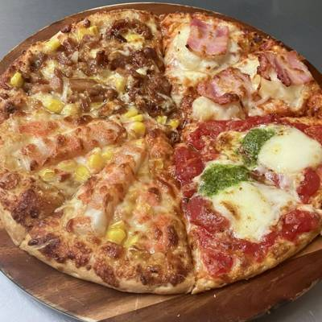
11/03 10:00 🚄 兵庫有限会社ナチュラルスマイルのプレスリリース 2026年9月1日〜10月30日の商品別売上を集計。上位5品は、11月30日までの秋
イージーリンク株式会社のプレスリリース グルテンフリーのご褒美スイーツや、冷凍ストックできるお惣菜、卵不使用パンの詰め合わせも！
株式会社ニュー・オータニのプレスリリース シークレットが出る確率は1/6。自分で引くドキドキの缶バッジをもれなくプレゼント！ ホ
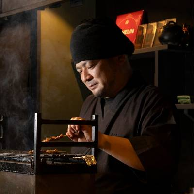
11/03 10:17 🚄 兵庫UNCHI株式会社のプレスリリース ミシュランガイド京都・大阪2026ビブグルマン掲載の「炭匠 御厨」と「人類みな麺類」が2時間
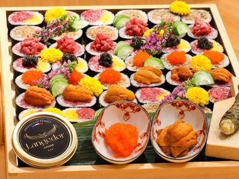
11/03 09:40 🗼 銀座株式会社サンジゲンのプレスリリース Kobe Beef Kappo Jigen Partners with Kobe Usuna
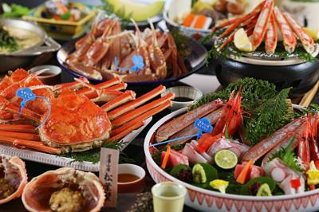
11/04 08:50 🚄 兵庫日和山観光株式会社のプレスリリース 仕入れから調理、ご提供に至るまで。カニのプロがそろう金波楼だから提供できる、これぞ本場の松葉
SRSホールディングス株式会社のプレスリリース 北海道産かに・ほたてを使用した丼や、北海道の食材を盛り合わせた天ぷら、心もからだ
SRSホールディングス株式会社のプレスリリース ～名物の「玉子焼（明石焼）」と熱々の鴨なべ・鴨なんばんを味わう、贅沢な季節限定商
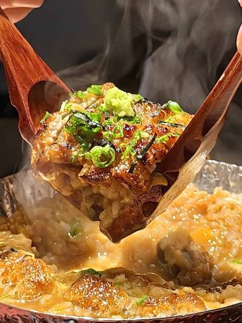
11/04 07:55 🚄 兵庫株式会社Ａｃｔ Ｃｏｍｍｕｎｉｔｙのプレスリリース あったか小鍋で「四膳目」まで楽しめる冬だけのひつまぶし。フェア特別価格2,8
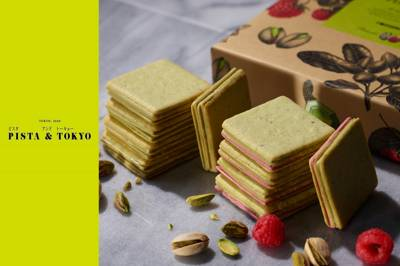
11/04 06:20 🚄 京都株式会社ケイシイシイのプレスリリース 幅広い世代が訪れるジェイアール京都伊勢丹では、ピスタチオスイーツ専門店ならではの緑鮮やかな
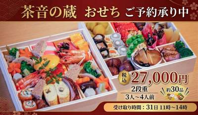
11/03 10:30 🚄 鹿児島鹿児島堀口製茶有限会社のプレスリリース お茶の創作レストランならではのこだわりを詰め込んだ、3～4人前のおせち。数量限定で202
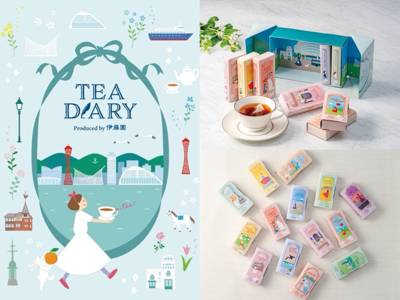
11/03 10:15 🚄 神戸株式会社 大丸松坂屋百貨店のプレスリリース ●場所：大丸神戸店地1階 食品売場 ●11月4日(水) ニューオープン お茶の伊藤園
株式会社 鼓月のプレスリリース ～京都で創業81年の和菓子店が、神戸の皆様へ伝統と新しいおいしさをお届け～ 株式会社鼓月（本社：
長野県凍豆腐工業協同組合のプレスリリース 11月3日 「高野豆腐の日」から、毎日をすこやかに暮らすレシピ大募集！ 全国凍豆腐工業
株式会社SAKIGAKEホールディングスのプレスリリース 「高槻店」のリニューアルオープンを記念し、すべてのラーメンを100円引
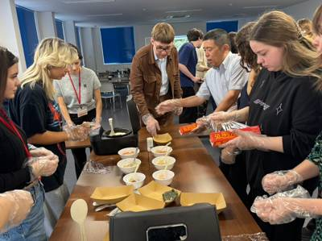
11/03 09:06 🚄 兵庫株式会社岩田産業グループホールディングスのプレスリリース ～お米の学びからおにぎり作り、ビジネスマナーまで。ウクライナ出身社員も
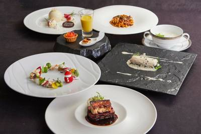
11/03 09:00 🚄 神戸信和ホールディングス株式会社のプレスリリース 11月30日（月）までのご予約で10％OFF 信和グループ・信和ホテルズ株式会社が
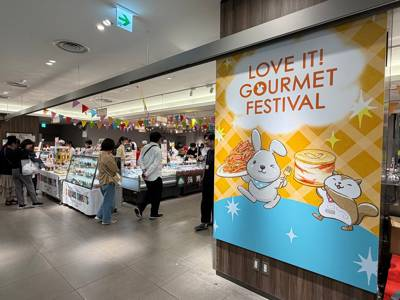
11/03 10:00 🗼 銀座株式会社TBSグロウディアのプレスリリース 銀座三越 新館7階 催物会場にて、2026年11月9日（月）まで、『ラヴィット！グル
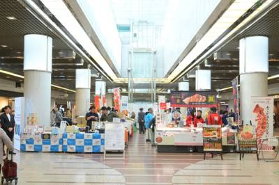
11/03 17:02 🗼 川崎有限会社グリーンフーズあつみのプレスリリース 美味しいと凄い技術の出会いが、地域の未来をつくる。おつけもの慶創業23周年「慶フェ
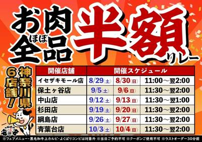
11/03 14:30 🗼 神奈川株式会社富士達のプレスリリース ～11月7日（土）の茅ヶ崎店を皮切りに、八王子店、大和店へとバトンを繋ぐ期間限定フェア～ 「安全
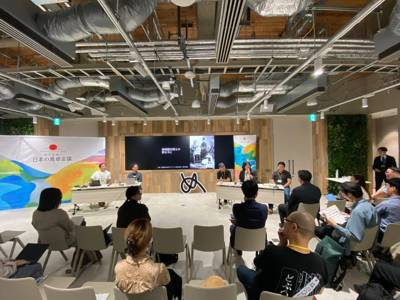
11/03 10:10 🗼 東京株式会社糀屋三左衛門のプレスリリース 糀屋三左衛門29代当主 村井三左衛門が「めぐるめく日本の食卓会議2026」に登壇。日本独自
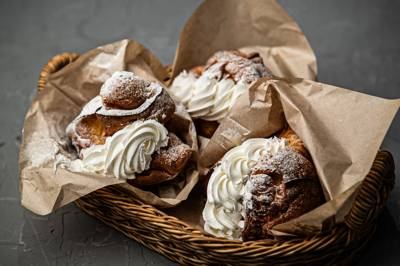
11/03 10:00 🗼 吉祥寺株式会社エスエルディーのプレスリリース 様々なスペースやイベントの企画・運営を手がける株式会社エスエルディー（本店：東京都港区、
株式会社DEiBA Companyのプレスリリース 29卒サービスもリリース HP：https://deiba.jp/corpo
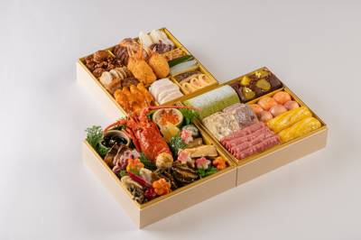
11/03 21:37 🚄 神戸明海グループ株式会社のプレスリリース 熟練の料理人が手掛ける伝統と革新の味わい。和洋中三段重から、少人数向けの個食・オードブルま
株式会社 老祥記のプレスリリース 「第15回KOBE豚饅サミット®2026」開幕！＜11/8（日）-11（水）、11/14（土）
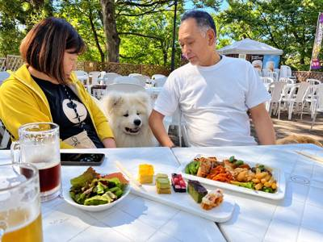
11/03 15:10 🚄 兵庫株式会社アーバンのプレスリリース 標高488ｍの「高尾山ビアマウント」で、2026年11月1日（土）からペット同伴エリアを設けま
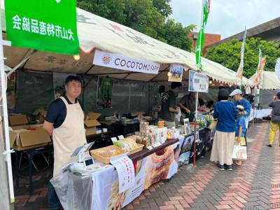
11/03 14:00 🚄 沖縄株式会社ココトモファームのプレスリリース ～11月7日（土）・8日（日）の2日間、愛知・犬山の田んぼのお米から作る米粉バウムクー
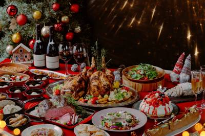
11/03 13:00 🚄 沖縄株式会社ホライズン・ホテルズのプレスリリース 開催期間 2026年11月21日（土）～12月25日(金) 大阪ベイエリアに位置す
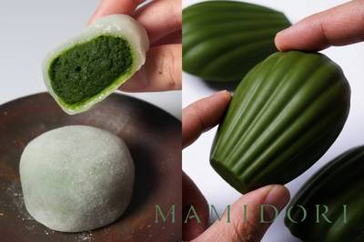
11/03 12:00 🚄 京都合同会社firstfanのプレスリリース 要望の多かったメイン商品の抹茶大福と抹茶マドレーヌがどちらも味わえる贅沢なセットが新規
パルシステム生活協同組合連合会のプレスリリース 利用者講師がおいしい淹れ方を伝授 生活協同組合パルシステム山梨 長野（本部：山梨
パルシステム生活協同組合連合会のプレスリリース ヒヨコから手掛けた親鶏の新鮮卵 生活協同組合パルシステム山梨 長野（本部：山梨県
パルシステム生活協同組合連合会のプレスリリース 生演奏で子どものコンサートデビューも 生活協同組合パルシステム山梨 長野（本部：
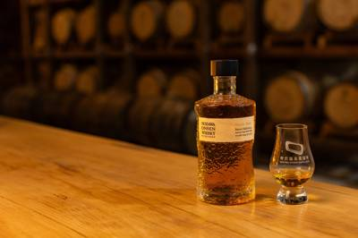
11/03 15:00 🚄 兵庫Nozawa Onsen Distillery株式会社のプレスリリース 包装資材の入荷遅延に伴い、2026年11月6日（金）に予
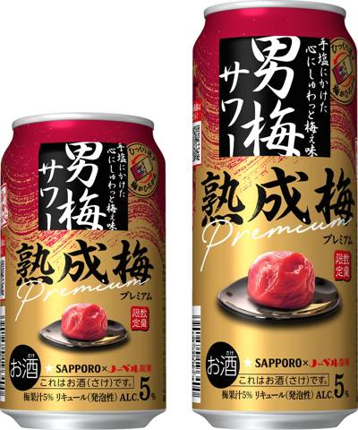
11/03 10:00 🚄 岩手サッポロビール株式会社のプレスリリース 3年物の梅干しペーストを2倍に増量した、余韻豊かな男梅サワー サッポロビール(株)は「サ
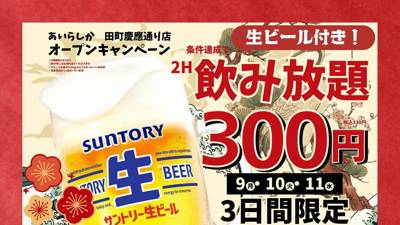
11/03 09:10 🚄 博多株式会社 FS.shakeのプレスリリース 博多のもつ鍋や名物おでんを気軽に楽しめる大衆酒場が田町に。3日間限定のオープン記念キ
株式会社 FS.shakeのプレスリリース 博多のもつ鍋や名物おでんを気軽に楽しめる大衆酒場が神戸・三宮に。3日間限定のオープン
株式会社MUKAのプレスリリース 〜アダプトゲンアルコール・ファンクショナルアルコール市場の先駆者としてブランド地位を確立〜 熊
音源: Drop It Like It’s Hot x Staying Alive
Small text, big feelings. Use it for an encouraging message, a hint at an announcement, or something your audience will relate to. Swap in your own text, and it works for any niche.
音源: Original audio
Battery at 1%? Not for long. Take your audience from 1% to 100% with a before and after that shows a glow-up, a mood switch, or an energy boost. It’s big in beauty and wellness, but it works for any transformation. Your recharge can be a best friend, a product, or a service.
News alert: toggle on. This is an easy way to tease an announcement, a news post, or a new series on your channel. It’s simple to recreate and works for any niche.